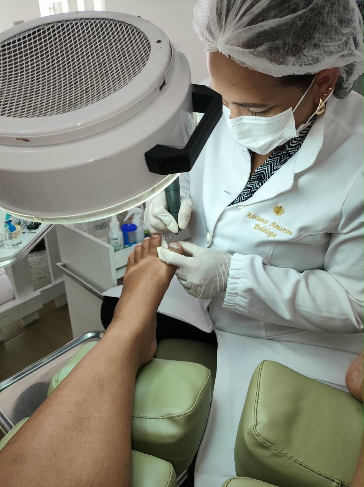
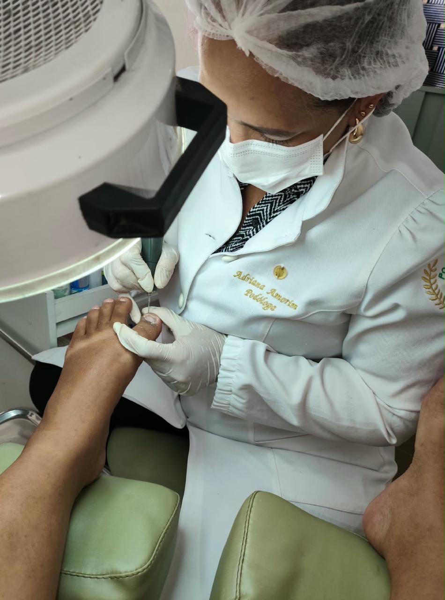
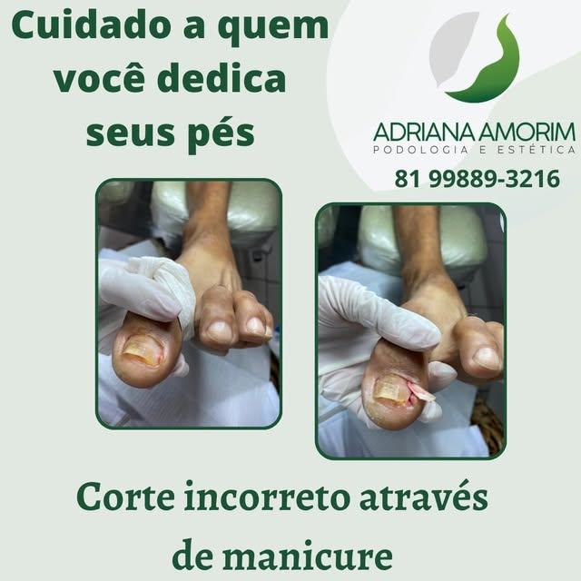
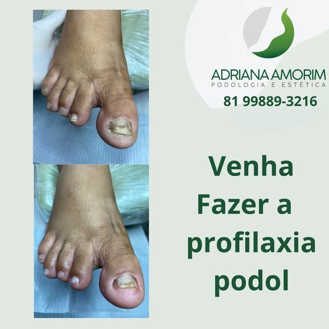
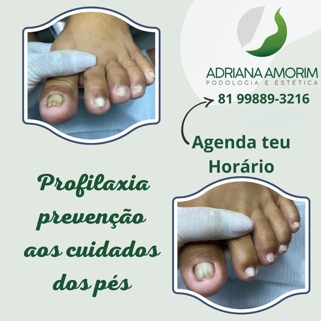
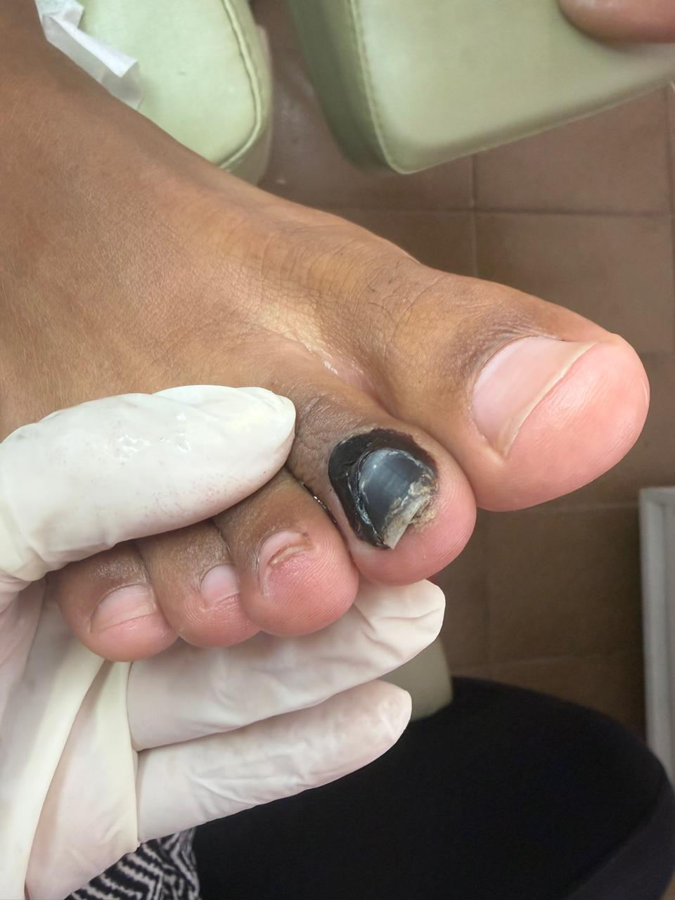
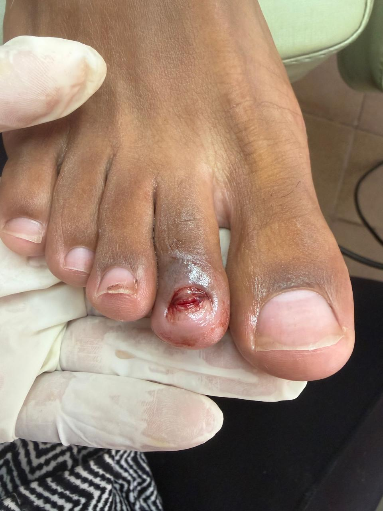
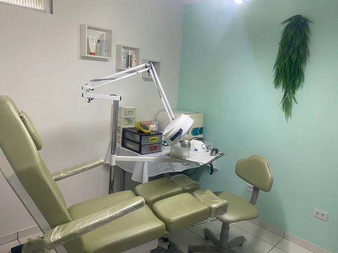

Desencravamento de unhas
Cuidado com unhas encravadas, com avaliação individual e atenção ao desconforto. Agende seu atendimento com Adriana.
Conversar sobre meus pésPODOLOGIA EM ÁGUA FRIA · RECIFE
Desencravamento de unhas, profilaxia e tratamento de rachaduras. Reserve um tempo para cuidar dos seus pés com Adriana Amorim.
Quero cuidar dos meus pésSomente com agendamento pelo WhatsApp

UM OLHAR PARA OS SEUS PÉS
Não espere o desconforto fazer parte da rotina. Converse com Adriana sobre o que seus pés precisam.
Cuidado com unhas encravadas, com avaliação individual e atenção ao desconforto. Agende seu atendimento com Adriana.
Conversar sobre meus pésCuidados de manutenção e higiene dos pés e das unhas, com atenção à sua rotina.
Tirar uma dúvidaCuidados para os pés com rachaduras e orientações para dar continuidade ao cuidado em casa.
Consultar atendimento
CONHEÇA A PROFISSIONAL
Sou técnica em Podologia e compartilho no meu perfil informações sobre os cuidados com os pés.
Para conhecer melhor meu trabalho, acompanhe o Instagram. Se quiser saber mais sobre os atendimentos, será um prazer conversar com você.
Conheça meu trabalho no InstagramQUEM JÁ PASSOU POR AQUI
Relatos de quem conhece o trabalho da Adriana. Clique nos cartões ao lado ou use as setas para explorar.
Ver avaliações no Google Maps ↗1 de 6
Seleção de avaliações públicas · consultadas em 30/10/2026
REGISTROS DO TRABALHO
Comparativos e registros de atendimento enviados pela Adriana e publicados em seu Instagram. As imagens só aparecem se você escolher visualizá-las.
PRINCIPAL CUIDADO
Registro real de cuidados com unha encravada. Contém imagens de procedimento e pode causar desconforto.

Ver publicação original ↗Fotografias reais de pés e unhas antes e depois de cuidados podológicos. Podem causar desconforto.

Ver publicação original ↗Fotografias reais de pés e unhas antes e depois de cuidados podológicos. Podem causar desconforto.

Ver publicação original ↗REGISTRO ENVIADO PELA PROFISSIONAL
Imagens reais de uma unha antes e após um procedimento. Contêm ferida exposta e podem causar desconforto.


Registro após o procedimento, antes da cicatrização. O acompanhamento e a recuperação variam em cada caso.
Cada caso é individual. Os registros ilustram atendimentos realizados e não representam garantia de resultado.
ANTES DA SUA VISITA
O primeiro passo pode ser uma conversa.
Clique em um dos botões de agendamento para abrir o WhatsApp da Adriana. O atendimento é de segunda a sábado, das 9h às 20h, somente com agendamento. Por lá, você pode consultar a disponibilidade e combinar sua visita.
Conte sua dúvida à Adriana. A indicação de cuidados depende de uma avaliação individual.
O atendimento acontece em espaço próprio na Rua Bom Conselho, 468 — Água Fria, Recife – PE, CEP 52120-200. É necessário agendar antes da sua visita.
Acesse o perfil @podologa_adrianarecife no Instagram para acompanhar as publicações.
VENHA CUIDAR DE VOCÊ

Segunda a sábado, das 9h às 20h.
Atendimento em espaço próprio, somente com agendamento.
DÊ O PRIMEIRO PASSO
Segunda a sábado, das 9h às 20h.
Fale com Adriana para agendar seu atendimento.